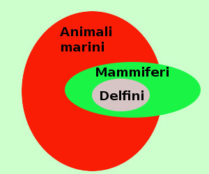
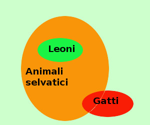

|
Anche qui vediamo un giudizio vero ed uno falso: vedremo che il giudizio sara' vero solamente se A e B hanno qualche elemento in comune Dimostriamo la validita' (o meno) del sillogismo: 
mediante i diagrammi di Eulero-Venn I delfini appartengono all'insieme degli animali marini l'insieme dei mammiferi ha elementi comuni coll'insieme degli animali marini quindi otteniamo la figura a destra ed il ragionamento e' valido avendo l'insieme degli animali marini e dei delfini degli elementi comuni Ho visto sull'enciclopedia che esistono anche delfini non animali marini ma fluviali; puoi variare l'esempio scrivendo il primo come qualche delfino e' un animale marino Vediamo anche un esempio di sillogismo non valido: 
tutti i leoni sono selvatici significa: { leoni }⊂{ selvatici} qualche gatto e' selvatico significa: { gatti } ∩ { selvatici } ≠ ∅ Qualche leone e' un gatto significa: { leoni } ∩ { gatti } ≠ Ø falso e siccome l'insieme dei gatti e dei leoni non hanno elementi comuni il ragionamento e' falso mediante i diagrammi di Eulero-Venn i 3 giudizi dicono: L'insieme dei leoni e' contenuto nell'insieme degli animali selvatici vero L'insieme dei gatti ha qualche elemento in comune con l'insieme degli animali selvatici vero (esiste il gatto selvatico europeo, inoltre parecchi gatti sono randagi) L'insieme dei leoni e l'insieme dei gatti hanno qualche elemento in comune falso Otteniamo la figura a destra ed il ragionamento non e' valido essendo l'insieme dei leoni e l'insieme dei gatti disgiunti |